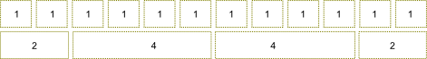

Система сеток
На большинстве веб-сайтов содержимое должно быть организовано в табличную структуру со строками и столбцами. На рисунке В.2 представлен пример лэйаута типичного сайта: блок заголовка с логотипом, боковая панель слева, содержимое страницы в центре, рекламная панель в правой части и футер (или подвал) сайта внизу. Эти блоки организованы в сетку (grid), хотя ячейки сетки различаются по ширине (некоторые ячейки могут охватывать несколько столбцов).
 Рисунок В.2. Лэйаут типичного сайта
Рисунок В.2. Лэйаут типичного сайта
Bootstrap предоставляет простую систему сеток для лэйаутов, с помощью которой легко организовать содержимое ваших веб-страниц в строки и столбцы.
Каждая строка может содержать до 12 столбцов 10 (рисунок C.3). Ширина столбца свободно изменяется и зависит от ширины контейнера сетки. Высота столбца может варьироваться в зависимости от высоты содержимого ячейки. Пространство между столбцами занимает 30 пикселей (по 15 с каждой стороны столбца).
10) Необязательно иметь 12 столбцов для одной строки, их может быть меньше. В таком случае пространство справа от последнего столбца останется пустым.
 Рисунок В.3. Система сеток Bootstrap
Столбцы могут быть соединены, то есть, одна ячейка может занимать пространство нескольких столбцов. Например, на рисунке В.3 верхняя строка сетки состоит из 12 столбцов, и каждая ячейка занимает один столбец. В нижней строке первая ячейка охватывает 2 столбца, вторая и третья - по 4 столбца каждая и четвертая - тоже 2 столбца (в сумме получаем 12 столбцов).
Почему сетка Bootstrap состоит всего из 12 столбцов?
Возможно по причине того, что 12 столбцов достаточно для большинства веб-сайтов. При работе с многогранной сеткой с большим количеством столбцом, будет тяжелее посчитать диапазоны столбцов без калькулятора. К счастью, Bootstrap позволяет вам настроить количество столбцов каждой строки, так что у вас может быть столько столбцов, сколько захотите.
Задание сетки
Чтобы организовать элементы страницы в сетку, первым делом нужно определить
контейнер, добавив элемент <div> с CSS-классом .container.
Для добавления к сетке новой строки используйте элемент <div> с CSS-классом .row,
как показано на образце ниже:
<div class="container">
<div class="row">
...
</div>
</div>
Для добавления столбцов используйте элементы <div> с CSS-классами от .col-md-1
до .col-md-12. Номер в имени класса указывает, сколько столбцов будет охватывать каждая
ячейка сетки:
<div class="container">
<div class="row">
<div class="col-md-1">Cell 1</div>
<div class="col-md-5">Cell 2</div>
<div class="col-md-6">Cell 3</div>
</div>
</div>
В этом примере у нас есть три ячейки. Первая имеет ширину в 1 столбец (она использует класс .col-md-1),
вторая охватывает пять столбцов сетки (класс .col-md-5), а третья - 6 (класс .col-md-6).
В качестве другого примера, давайте определим лэйаут, который мы видели на рисунке В.2. У него есть заголовок (логотип занимает 3 столбца), главная область содержимого (7 столбцов), боковая панель (3 столбца), рекламная панель (2 столбца) и футер. Ниже представлен HTML-код для этого лэйаута:
<div class="container">
<!-- Заголовок -->
<div class="row">
<div class="col-md-3">Logo</div>
<div class="col-md-9"></div>
</div>
<!-- Тело -->
<div class="row">
<div class="col-md-3">Sidebar</div>
<div class="col-md-7">Page Content</div>
<div class="col-md-2">Ads</div>
</div>
<!-- Футер -->
<div class="row">
<div class="col-md-12">Page Footer</div>
</div>
</div>
Смещение столбцов
На реальных веб-страницах сетка иногда должна содержать пустые пространства.
Их можно добиться смещением ячеек вправо с помощью CSS-классов от .col-md-offset-1 до .col-md-offset-12.
Номер в названии класса указывает, сколько столбцов должно быть пропущено.
В качестве примера рассмотрим рисунок В.4:
 Рисунок В.4. Смещения столбцов
Рисунок В.4. Смещения столбцов
Эта сетка имеет три ячейки, последние две из них смещены вправо, создавая тем самым пустые пространства. Для определения сетки из рисунка В.4 воспользуйтесь следующим HTML-кодом:
<div class="container">
<div class="row">
<div class="col-md-2">Cell 1</div>
<div class="col-md-4 col-md-offset-2">Cell 2</div>
<div class="col-md-2 col-md-offset-2">Cell 3</div>
</div>
</div>
Вложенные сетки
Вы можете создавать лэйауты сложным страниц с использованием вложенных сеток (см. рисунок В.5).
Для этого добавьте новый элемент <div>, содержащий класс .row и набор столбцов
.col-md-* внутри существующего столбца .col-md-*.
 Рисунок В.5. Вложенная сетка
Рисунок В.5. Вложенная сетка
Ниже приведен код для сетки из рисунка В.5:
<div class="container">
<div class="row">
<div class="col-md-2">Cell 1</div>
<div class="col-md-8">
<!-- Вложенная сетка -->
<div class="row">
<div class="col-md-4">Cell 21</div>
<div class="col-md-4">Cell 22</div>
</div>
<div class="row">
<div class="col-md-4">Cell 23</div>
<div class="col-md-4">Cell 24</div>
</div>
</div>
<div class="col-md-2">Cell 3</div>
</div>
</div>
В примере выше мы определили сетку, состоящую из трех ячеек (помеченных серым цветом): первая ячейка охватывает 2 столбца, вторая - 8 столбцов, а третья - 2 столбца. Затем мы помещаем вложенные строки сетки внутрь второй ячейки. Так как родительская ячейка охватывает 8 столбцов, дочерняя сетка также будет состоять из 8 столбцов.
Концепция "Mobile First"
Twitter Bootstrap поддерживает различные устройства, от широких дисплеев до планшетов и мобильных телефонов. По этой причине сетка лэйаута может адаптироваться под различные разрешения экрана.
Это также называется отзывчивостью или концепцией "mobile first" ("сначала мобильные"). Bootstrap следует этой концепции, то есть, ваш веб-сайт можно будет просматривать и использовать на экране любого размера. Однако, это не освобождает вас от кропотливой подготовки и планирования лэйаута.
Эта адаптация выполняется двумя методами. Во-первых, ширина столбцов сетки может изменяться. Например, если вы увеличиваете окно браузера, сетка автоматически изменит размер, чтобы заполнить пространство целиком.
Но что случится, если ваша веб-страница слишком широка для дисплея? Чтобы увидеть скрытую часть, посетителю сайта нужно будет прокрутить страницу вправо. Для мобильных телефонов и других устройств с низким разрешением это не самый лучший подход. Вместо этого, лучше, чтобы сетка становилась "сложенной" при определенной ширине экрана. Когда сетка сложена, ее строки преобразуются, и ячейки в итоге располагаются одна над другой (см. рисунок В.6).
Чтобы лучше управлять тем, когда сетка становится "сложенной", Bootstrap предоставляет вам дополнительные
CSS-классы: от .col-xs-1 до col-xs-12 ("xs" означает "extra-small" - очень маленькие устройства, т.е., телефоны),
от .col-sm-1 до .col-sm-12 ("sm" расшифровывается как "small devices" - маленькие устройства, т.е., планшеты)
и классы от .col-lg-1 до .col-lg-12 (large devices - большие устройства, т.е., широкие дисплеи). Эти классы
можно использовать вместе с классами .col-md-1 -- .col-md-12`, которые мы уже использовали ("md" означает "medium
devices" - средние устройства, т.е., настольные компьютеры).
Например, классы .col-md-* определяют сетку, которая будет "сложенной" при ширине экрана ниже
992 пикселей и горизонтальной для более широких экранов. Классы .col-sm-* сделают сетку
"сложенной" при ширине экрана ниже 778 пикселей и горизонтальной при значении выше. Класс .col-xs-*
всегда делает сетку горизонтальной, вне зависимости от ширины экрана.
 Рисунок В.6. Сетка адаптируется под размер экрана
Рисунок В.6. Сетка адаптируется под размер экрана
В таблице В.1 представлена сводка доступных классов сетки и их контрольных точек.
| Имя класса | Точка "складывания" сетки |
|---|---|
.col-xs-* |
<768px |
.col-sm-* |
>=768px |
.col-md-* |
>=992px |
.col-lg-* |
>=1200px |
Система сеток Bootstrap сильно упрощает процесс расположения элементов на веб-странице. Однако, использовать эту систему не обязательно. Иногда, например, вам может понадобиться намного более сложный лэйаут, и простой системы сеток будет недостаточно. В таком случае можно создать свой собственный лэйаут с помощью HTML-элементов
<table>и<div>и использовать его.